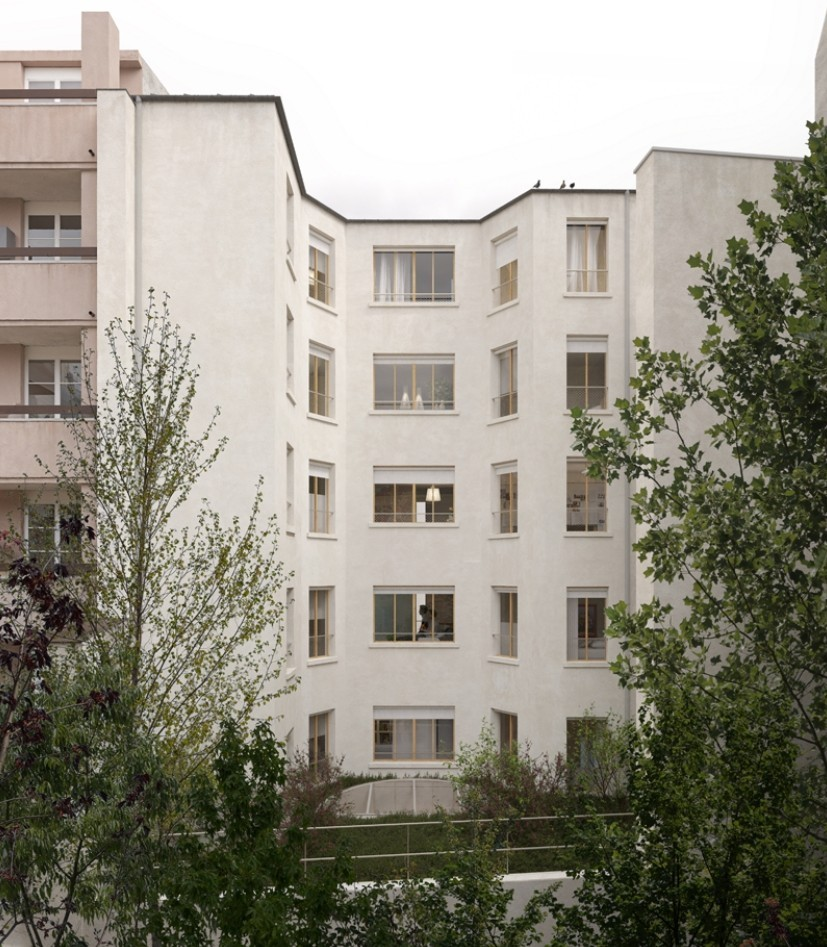
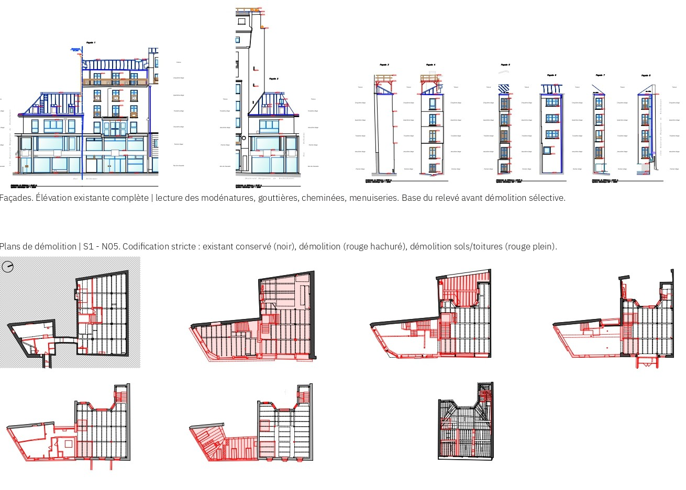
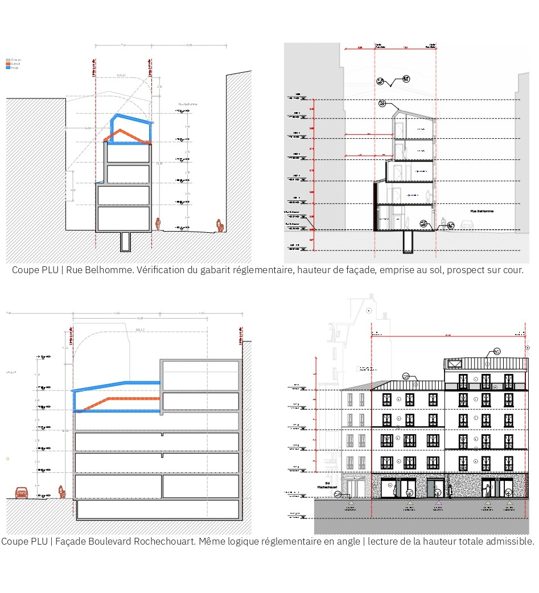

PRO · Rehabilitation
Belhomme
A corner residential building in Paris, its particular condition at the intersection of two streets creating a geometry that generates both problems and opportunities: obtuse room angles, a chamfered corner that reads as a landmark on the block, and party wall situations on two sides that require careful structural dialogue with adjacent buildings.
The rehabilitation addresses the envelope, the common areas, and the redistribution of the upper-floor apartments. The chamfered corner is treated as the compositional centre of the facade renovation, reinforcing its urban role. The project was conducted within the ABF regulatory framework, requiring close coordination with the heritage authority throughout the design and permitting stages.
Render, Proposed Courtyard Facade

Existing Facade Survey and Selective Demolition Plans

Regulatory Compliance, PLU Sections
